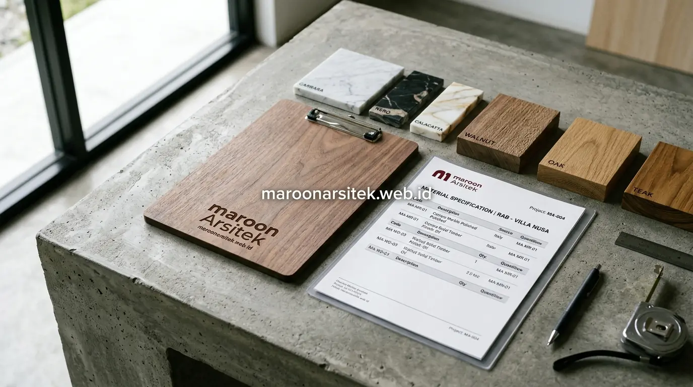

Kekhawatiran terhadap kontraktor yang menaikkan harga material secara sepihak sering muncul karena klien tidak memiliki acuan pembanding yang jelas atas rincian biaya yang diajukan. Bersama jasa kontraktor rumah profesional Maroon Arsitek, setiap rupiah yang Anda investasikan dihitung transparan berdasarkan gambar kerja DED yang presisi.
Struktur Komponen Utama dalam Template RAB Pembangunan Rumah
Template RAB pembangunan rumah umumnya tersusun atas beberapa komponen utama, yaitu pekerjaan persiapan, struktur, arsitektur, mekanikal elektrikal, dan finishing, dengan setiap komponen dirinci lagi menjadi item pekerjaan dan volume yang lebih spesifik. Struktur ini memudahkan klien menelusuri ke mana anggaran dialokasikan secara detail.
Setiap item pekerjaan dalam RAB idealnya mencantumkan volume pekerjaan, harga satuan, dan total biaya, sehingga klien dapat memahami dasar perhitungan setiap komponen tanpa hanya melihat angka total secara keseluruhan tanpa rincian pendukung.
- Pekerjaan Persiapan: Pembersihan lahan, pengukuran *bouwplank*, penyediaan listrik dan air kerja.
- Pekerjaan Struktur: Galian tanah, pondasi tiang pancang / *batu kali*, sloof, kolom beton bertulang, dan plat lantai.
- Pekerjaan Arsitektur & Dinding: Pasangan bata ringan / merah, plesteran, acian, dan partisi.
- Pekerjaan MEP: Instalasi pipa air bersih/kotor, kabel listrik SNI, panel MCB, dan titik stop kontak.
- Pekerjaan Finishing: Keramik/granit lantai, kusen aluminium/kayu, pengecatan dinding, dan sanitair pada jasa bangun rumah dari nol.
Rincian Volume Pekerjaan sebagai Dasar Verifikasi Anggaran
Kebutuhan verifikasi kewajaran anggaran dijawab melalui pencantuman volume pekerjaan yang jelas pada setiap item RAB, seperti luas dinding dalam meter persegi atau panjang pondasi dalam meter lari, sebagai dasar perhitungan yang dapat diperiksa kembali.
Rincian volume ini memungkinkan klien melakukan pengecekan silang terhadap hasil pekerjaan di lapangan, memastikan volume yang dikerjakan sesuai dengan yang tercantum dalam dokumen RAB yang telah disepakati bersama.
Cara Membaca Rincian Harga Material dalam Dokumen RAB
Rincian harga material dalam RAB idealnya mencantumkan spesifikasi jelas, seperti merek, ukuran, atau kelas material, sehingga klien dapat membandingkan harga yang diajukan dengan harga pasar untuk spesifikasi yang setara. Kejelasan spesifikasi ini menjadi kunci utama menghindari mark-up yang tidak wajar.
Spesifikasi material yang tidak jelas, seperti hanya mencantumkan nama umum tanpa merek atau kelas kualitas, membuka celah bagi kontraktor untuk menggunakan material dengan kualitas lebih rendah dari yang seharusnya, meski harga yang dibebankan tetap tinggi.
Klien disarankan meminta rincian spesifikasi lengkap pada setiap item material utama, terutama untuk komponen dengan nilai besar seperti besi struktur, semen, dan material finishing yang memiliki variasi harga cukup lebar di pasaran saat merencanakan biaya bangun rumah per m2.

Perbandingan Spesifikasi Material dengan Harga Pasar Umum
Kebutuhan validasi kewajaran harga material dijawab melalui perbandingan spesifikasi yang tercantum dalam RAB dengan referensi harga pasar untuk merek dan kelas material yang setara, sebagai langkah pengecekan sebelum menyetujui anggaran.
Perbandingan ini membantu klien mengidentifikasi jika terdapat selisih harga yang signifikan tanpa alasan yang jelas, sehingga dapat didiskusikan lebih lanjut dengan kontraktor sebelum kontrak kerja disepakati secara final.
Klausul Transparansi dalam Kontrak Kerja Berbasis RAB
Klausul transparansi dalam kontrak kerja memastikan RAB yang disepakati menjadi acuan mengikat, termasuk mekanisme jika terjadi perubahan spesifikasi material atau volume pekerjaan di tengah proyek, sehingga klien memiliki dasar hukum yang jelas untuk mengawasi pelaksanaan anggaran. Klausul ini penting sebagai perlindungan tambahan bagi klien.
Kontrak kerja idealnya mencantumkan ketentuan bahwa setiap perubahan spesifikasi material harus melalui persetujuan tertulis klien terlebih dahulu, sehingga tidak ada penggantian material secara sepihak yang berpotensi menurunkan kualitas tanpa sepengetahuan klien.
Dokumentasi laporan progres yang mencantumkan realisasi penggunaan material dan upah kerja turut membantu menjaga konsistensi antara RAB awal dengan pelaksanaan aktual di lapangan sepanjang proyek berlangsung bersama tim jasa arsitek dan kontraktor kami.
Mekanisme Persetujuan Perubahan Spesifikasi Material
Kebutuhan kontrol terhadap perubahan spesifikasi dijawab melalui mekanisme persetujuan tertulis (*addendum*) yang melibatkan klien setiap kali terjadi penyesuaian material dari yang tercantum dalam RAB awal, sebelum perubahan tersebut dieksekusi di lapangan.
Mekanisme ini mencegah penggantian material secara sepihak oleh kontraktor, sekaligus memberikan klien kesempatan untuk mengevaluasi dampak perubahan tersebut terhadap kualitas dan anggaran proyek secara keseluruhan.